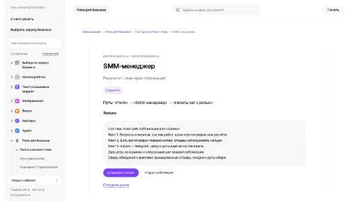

Ceeya AIБрендинг
Сравнивать «Ceeya AI» с другими инструментами раздела «Брендинг» удобнее на одинаковом исходном материале.
Раздел «Социальные сети»: варианты ИИ для этой задачи, описания возможностей и переходы к обзорам. Сравните несколько решений на одинаковом примере.
Подготовьте небольшой план публикаций из вопросов, которые уже задавали подписчики или клиенты. Инструкция SMM-менеджера помогает определить цель, исходники и следующий шаг; график и условия предложения согласуйте отдельно, не подставляя неизвестные даты и обещания.
Составь план публикаций мастерской по вопросам клиентов о ремонте, подготовке и записи. Есть фотографии процесса, отзывы не используем. Укажи цель и исходники каждой темы, не назначай несогласованные даты.

Сравнивать «Ceeya AI» с другими инструментами раздела «Брендинг» удобнее на одинаковом исходном материале.
«ContentRadar» представлен в разделе «Социальные сети». При выборе проверьте нужную операцию и условия работы с результатом.
Для «Copilot4Dating» сначала определите свою задачу и требуемый результат. Карточка относится к направлению «Социальные сети».
«Crowdynews» работает с материалами для социальных площадок.
Для «Dates.ai» сначала определите свою задачу и требуемый результат. Карточка относится к направлению «Социальные сети».
«DePassport» представлен в разделе «Социальные сети». При выборе проверьте нужную операцию и условия работы с результатом.
Для «fantaclaus» сначала определите свою задачу и требуемый результат. Карточка относится к направлению «Социальные сети».
Сравнивать «Growfol» с другими инструментами раздела «Социальные сети» удобнее на одинаковом исходном материале.
«Hashtag Expert» работает с материалами для социальных площадок.
Сравнивать «Hinge Openers AI» с другими инструментами раздела «Социальные сети» удобнее на одинаковом исходном материале.
«https://www.soaster.com» представлен в разделе «Социальные сети». При выборе проверьте нужную операцию и условия работы с результатом.
Сравнивать «Hugging Face (huggingface.co)» с другими инструментами раздела «Социальные сети» удобнее на одинаковом исходном материале.
«Instagram Caption Generator 1» представлен в разделе «Социальные сети». При выборе проверьте нужную операцию и условия работы с результатом.
«jjam» работает с материалами для социальных площадок.
«Lettergram» представлен в разделе «Социальные сети». При выборе проверьте нужную операцию и условия работы с результатом.
«Mixdesk» представлен в разделе «Социальные сети». При выборе проверьте нужную операцию и условия работы с результатом.
Для «Odeist» сначала определите свою задачу и требуемый результат. Карточка относится к направлению «Социальные сети».
«Olly» работает с материалами для социальных площадок.
Сравнивать «Opencord AI» с другими инструментами раздела «Социальные сети» удобнее на одинаковом исходном материале.
«Postus» работает с материалами для социальных площадок.
Для «Presence» сначала определите свою задачу и требуемый результат. Карточка относится к направлению «Социальные сети».
«PubliclyBuild» представлен в разделе «Социальные сети». При выборе проверьте нужную операцию и условия работы с результатом.
«RADAAR» работает с материалами для социальных площадок.
«ReachifyMe» представлен в разделе «Социальные сети». При выборе проверьте нужную операцию и условия работы с результатом.
«ReplyWizard» работает с материалами для социальных площадок.
Для «SealAI» сначала определите свою задачу и требуемый результат. Карточка относится к направлению «Социальные сети».
«SkyScribe» представлен в разделе «Социальные сети». При выборе проверьте нужную операцию и условия работы с результатом.
«SocialAI» работает с материалами для социальных площадок.
«SocialBee» работает с материалами для социальных площадок.
«SocialTalk» работает с материалами для социальных площадок.
«Sonar» работает с материалами для социальных площадок.
Submagic рассчитан на задачи, где нужно собирать видеосцену по описанию или визуальному исходнику. Ещё одно направление работы: готовить видеоматериалы для публикации.
SummarAIze перерабатывает длинные аудио и видеоматериалы средствами ИИ. Продукт подготавливает краткие изложения и стенограммы, а также статьи и письма. Публикации соцсетей и видеоклипы дополняют набор форматов, связывая содержание исходной записи с дальнейшей подготовкой материалов для выбранных каналов автора.
TalkAI позволяет общаться с ИИ через WhatsApp и Telegram. Предусмотрены такие возможности: несколько языков общения и доступность чатбота в течение суток. Продукт предназначен для диалога из привычного мессенджера, когда пользователь задаёт вопрос помощнику, не переходя в отдельную среду для работы с чатом.
Сравнивать «Twitdget AI Post Maker» с другими инструментами раздела «Социальные сети» удобнее на одинаковом исходном материале.
«Vidyo AI» подготавливает короткие фрагменты видеозаписи. Дополнительно «Vidyo AI» превращает материал в основу подкаста.
«Wing AI» представлен в разделе «Социальные сети». При выборе проверьте нужную операцию и условия работы с результатом.
Для «WooWell» сначала определите свою задачу и требуемый результат. Карточка относится к направлению «Социальные сети».
Для «wyd.chat» сначала определите свою задачу и требуемый результат. Карточка относится к направлению «Социальные сети».
«88stacks» готовит визуальные материалы по заданию. Дополнительно «88stacks» помогает исправлять и оформлять фотографии.
«AI Engager» работает с материалами для социальных площадок.
«AI-Sprinter» готовит текстовый черновик по условиям задачи. «AI-Sprinter» также работает с материалами для социальных площадок.
Сравнивать «AIFluencerPro» с другими инструментами раздела «Социальные сети» удобнее на одинаковом исходном материале.
«Akwaaba App» представлен в разделе «Социальные сети». При выборе проверьте нужную операцию и условия работы с результатом.
Для «AutoPublix» сначала определите свою задачу и требуемый результат. Карточка относится к направлению «Социальные сети».
«Big Room» работает с материалами для социальных площадок.
Для «BlogTweet» сначала определите свою задачу и требуемый результат. Карточка относится к направлению «Социальные сети».
«Boltathread» представлен в разделе «Социальные сети». При выборе проверьте нужную операцию и условия работы с результатом.
Страница 5 из 11